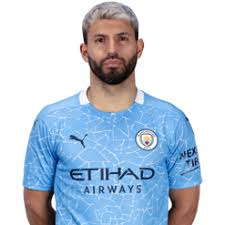

Cristiano Ronaldo
Cristiano Ronaldo dos Santos Aveiro GOIH ComM is a Portuguese professional footballer
who plays as a forward for Serie A club Juventus and captains the Portugal national team.
Born: 5 February 1985 (age 35 years), Hospital Dr. Nélio Mendonça, Funchal, Portugal
Height: 1.87 m
Salary: 3.1 crores EUR (2019)
Partner: Georgina Rodríguez (2017–)
Children: Cristiano Ronaldo Jr., Alana Martina dos Santos Aveiro, Eva Maria Dos Santos,
Mateo Ronaldo
Current teams: Juventus F.C. (#7 / Forward), Portugal national football team (#7 / Forward)
|
|---|
Lionel Messi
Lionel Andrés Messi is an Argentine professional footballer who plays as a forward and
captains both La Liga club Barcelona and the Argentina national team.
Born: 24 June 1987 (age 33 years), Rosario, Argentina
Height: 1.7 m
Spouse: Antonela Roccuzzo (m. 2017)
Salary: 2.6 crores GBP (2020)
Current teams: FC Barcelona (#10 / Forward), Argentina national football team (Forward)
Nationality: Argentine, Spanish
|
|---|
Robert Lewandowski
Robert Lewandowski is a Polish professional footballer who plays as a striker for Bundesliga
club Bayern Munich and is the captain of the Poland national team.
Born: 21 August 1988 (age 32 years), Warsaw, Poland
Nationality: Polish
Height: 1.84 m
Spouse: Anna Lewandowska (m. 2013)
Salary: 2 crores EUR (2020)
Current teams: FC Bayern Munich (#9 / Forward), Poland national football team (Forward)
|
|---|
Neymar
Neymar da Silva Santos Júnior, known as Neymar, is a Brazilian professional footballer who
plays as a forward for Ligue 1 club Paris Saint-Germain and the Brazil national team. He
is widely considered as one of the best players in the world.
Born: 5 February 1992 (age 28 years), Mogi das Cruzes, State of São Paulo, Brazil
Height: 1.75 m
Salary: 3.68 crores EUR (2017)
Current teams: Paris Saint-Germain F.C. (#10 / Forward), Brazil national football team (Forward), Brazil
Children: Davi Lucca da Silva Santos
Parents: Nadine Santos, Neymar Santos Sr.
|
|---|
Mohamed Salah
Mohamed Salah Hamed Mahrous Ghaly is an Egyptian professional footballer who plays as
a forward for Premier League club Liverpool and the Egypt national team. Considered one
of the best players in the world, he is known for his finishing, dribbling, and speed.
Born: 15 June 1992 (age 28 years), Nagrig, Egypt
Height: 1.75 m
Nationality: Egyptian
Spouse: Magi Salah (m. 2013)
Current teams: Liverpool F.C. (#11 / Forward), Egypt national football team (#10 / Forward)
|
|---|
Sergio Agüero

Sergio Leonel Agüero del Castillo, colloquially known as Kun Agüero, is an Argentine
professional footballer who plays as a striker for Premier League club Manchester City
and the Argentine national team. He wears "Kun" on his shirt, a childhood nickname based
on the title character from the cartoon Kum-Kum.
Born: 2 June 1988 (age 32 years), Buenos Aires, Argentina
Height: 1.73 m
Spouse: Giannina Maradona (m. 2008–2012)
Salary: 1.3 crores GBP (2018)
Current teams: Manchester City F.C. (#10 / Forward), Argentina national football team (Forward)
Children: Benjamín Agüero Maradona
|
|---|
Virgil van Dijk
Virgil van Dijk is a Dutch professional footballer who plays as a centre-back for Premier
League club Liverpool and captains the Netherlands national team. Considered one of the best
defenders in the world, he is known for his strength, leadership and aerial ability.
Born: 8 July 1991 (age 29 years), Breda, Netherlands
Height: 1.93 m
Nationality: Dutch
Spouse: Rike Nooitgedagt
Current teams: Liverpool F.C. (#4 / Defender), Netherlands national football team (Defender)
|
|---|
Alisson Becker

Alisson Ramses Becker, commonly known as Alisson, is a Brazilian professional footballer
who plays as a goalkeeper for Premier League club Liverpool and the Brazil national team.
In 2019 he was named The Best FIFA Goalkeeper and was also the recipient of the inaugural
Yashin Trophy.
Born: 2 October 1992 (age 27 years), Novo Hamburgo, State of Rio Grande do Sul, Brazil
Height: 1.91 m
Nationality: Brazilian
Spouse: Natália Loewe (m. 2015)
Current teams: Liverpool F.C. (#1 / Goalkeeper), Brazil national football team (Goalkeeper)
Awards: The Best FIFA Goalkeeper, Premier League Golden Glove, Yashine Trophy, FIFA FIFPro World XI
|
|---|
David Beckham

David Robert Joseph Beckham OBE is an English former professional footballer, the current
president & co-owner of Inter Miami CF and co-owner of Salford City.
Born: 2 May 1975 (age 45 years), Whipps Cross University Hospital, London, United Kingdom
Height: 1.8 m
Spouse: Victoria Beckham (m. 1999)
Children: Brooklyn Beckham, Romeo James Beckham, Harper Seven Beckham, Cruz Beckham
|
|---|
Kevin De Bruyne
Kevin De Bruyne is a Belgian professional footballer who plays as a midfielder for Premier
League club Manchester City, where he is vice-captain, and the Belgian national team.
Born: 28 June 1991 (age 29 years), Drongen, Belgium
Height: 1.81 m
Spouse: Michele Lacroix (m. 2017)
Current teams: Manchester City F.C. (#17 / Midfielder), Belgium national football team (Midfielder)
Children: Mason Milian De Bruyne
Nationality: Belgian, British
|
|---|